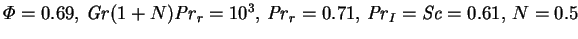
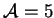
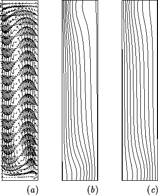

The variety of phenomena possible in the seven parameter system defined by equations (2.52)-(2.55) and the geometry (fig. 5.1) is far too diverse to be adequately addressed here. Instead, a single case is presented in some detail. The parameters are:  and , and the mesh used is that shown in figure 5.3. Figure 5.4 shows the solution variables.
|  |